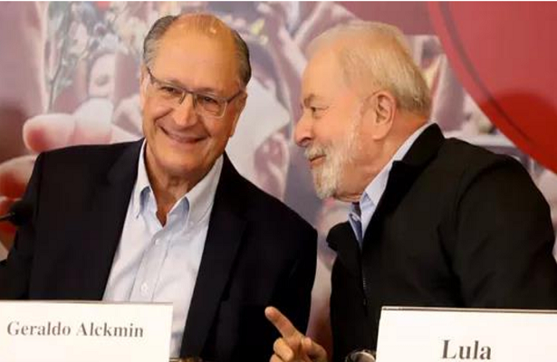

'Ranço da Faria Lima com PT já diminuiu 90%', diz empresário que se reuniu com Lula
07/07/2022 06h00 - Atualizado 07/07/2022 06h00
Líder nas pesquisas de intenção de voto para a disputa presidencial, o ex-presidente Luiz Inácio Lula da Silva (PT) tem ido a diversos encontros com empresários nas últimas semanas.
O esforço de reaproximação com um setor que apoiou em peso a eleição de Jair Bolsonaro (PL) em 2018 tem dado resultados, disse em entrevista à BBC News Brasil o empresário João Camargo, presidente da Esfera, organização que hoje reúne entre seus quase 50 associados grandes empresas, como Bradesco, BTG Pactual, XP Investimentos, Cosan, MRV Engenharia, Multiplan, Hapvida e Mercado Bitcoin.
Segundo Camargo, sua rejeição ao petista diminuiu por causa de dois fatores: o esforço de Lula em dialogar com a elite econômica e a decisão de ter como parceiro de chapa o ex-governador de São Paulo Geraldo Alckmin (PSB). Mas Camargo admite que o favoritismo do petista na eleição fez o empresariado entender que precisa dialogar com o ex-presidente.
"Eu não estou dizendo que essa parte dos (executivos da avenida) Faria Lima, empresário, dono de laboratório farmacêutico, fintechs, os bancos, vão votar no PT. Mas hoje, aquele ranço, aquela desconfiança, já diminuiu, na minha opinião, 90%. Isso eu posso te atestar que realmente diminuiu", afirma Camargo. "Faria Lima" é uma referência ao nome da avenida em São Paulo que abriga escritórios de grandes empresas.
Em 28/06, Camargo foi a um desses encontros de Lula com empresários. O evento foi realizado na casa do advogado Sergio Renault, com participação de Carlos Sanchez (EMS), Cândido Pinheiro (Hapvida), Matheus Santiago (Ageo Terminais) e Pedro Silveira (Upon Global Capital).
Segundo o presidente da Esfera, Lula enfatizou no encontro sua abertura para o diálogo com o setor empresarial, tanto quando foi líder sindical, quanto no período em que esteve na Presidência. Lula ressaltou também a importância de Alckmin em seu governo, caso seja eleito em outubro. E detalhou sua estratégia para recuperar a economia: melhorar a imagem internacional do Brasil para atrair investimentos estrangeiros e assim reduzir o preço do dólar, controlar a inflação e baixar os juros.
Apesar de reconhecer a força do petista, Camargo não subestima o potencial de Bolsonaro na disputa. Lembra que o presidente tem a máquina pública (ou seja, controle sobre o repasse de verbas públicas) e apoio de setores importantes, como o agronegócio e o eleitorado mais conservador.
Para Camargo, é quase impossível haver um candidato competitivo da chamada terceira via (ou seja, alternativa a Lula ou Bolsonaro) e não há espaço para golpe de Estado no Brasil. "O vencedor dessas eleições vai ser garantido seja ele quem for."